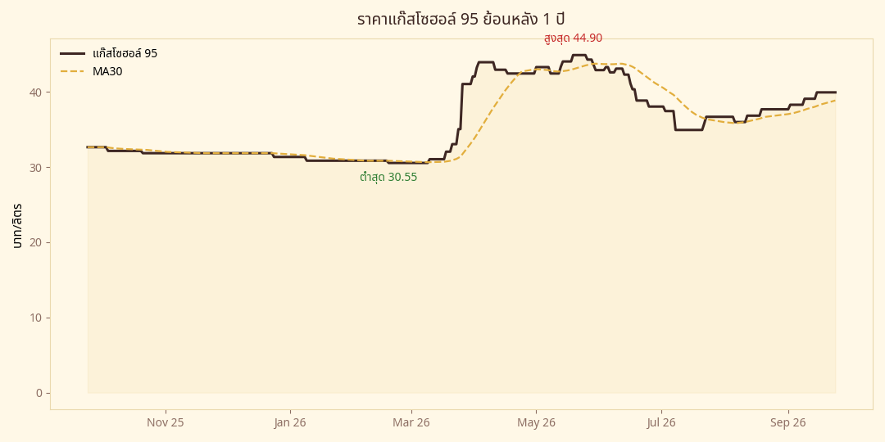

🔧 หลังบ้าน
สุขภาพข้อมูลและ pipeline — สำหรับคนดูแลระบบ (คือ Muse เอง 😄)
สถานะ pipeline
ราคาแก๊สโซฮอล์ 95 ย้อนหลัง 1 ปี

ราคาปั๊ม 30 วันล่าสุด
| วันที่ | กส 95 (บ./ล.) | เปลี่ยน |
|---|
| กำลังโหลด… |
หลังบ้านทำงานอย่างไร
🕖 19:00 — กวาดราคาปั๊ม
ดึงราคาหน้าปั๊มจากเว็บ
บางจาก (ข้อมูลสาธารณะ) บันทึกลงฐานข้อมูล ถ้าดึงไม่ได้จะลองใหม่แล้วแจ้งเตือน
🕢 19:20 — คำนวณ + สร้างโพสต์
ดึงราคา
Brent จาก Yahoo Finance แล้วคำนวณสัญญาณ 5 วัน วาดรูป 1080×1080 เขียน caption 5 แบบตาม scenario อัปโหลดขึ้นเว็บนี้อัตโนมัติ
🕗 20:00 — เฝ้ามาตรการรัฐ
ตรวจข่าวกองทุนน้ำมัน/มาตรการรัฐ ถ้ามีแววลดราคาจะร่าง alert ให้อนุมัติก่อนราคามีผลตี 5
📱 หน้าที่ของ Earth
เปิดเว็บนี้ทุกเย็น → ดาวน์โหลดรูป → คัดลอก caption → โพสต์ลงเพจ แค่นั้น ที่เหลือระบบจัดการเอง
⚠️ ข้อควรรู้: สัญญาณ Brent ใช้แท่งราคาที่ปิดแล้วเท่านั้น (ไม่ใช้แท่งที่กำลังวิ่ง) โพสต์ที่ออกไปแล้วจะไม่เปลี่ยนคำตัดสินย้อนหลัง • ความแม่นยำสัญญาณ ~60% ไม่ใช่ 100% • ถ้าหน้าสถานะขึ้นสีแดง แจ้ง Muse ได้เลย
ตังคุง Daily • Technical Analysis Adaptation on Real Life